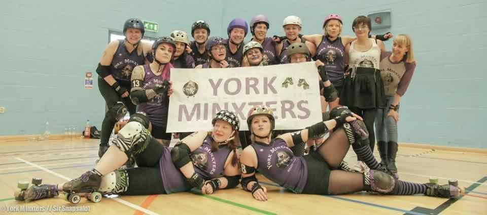
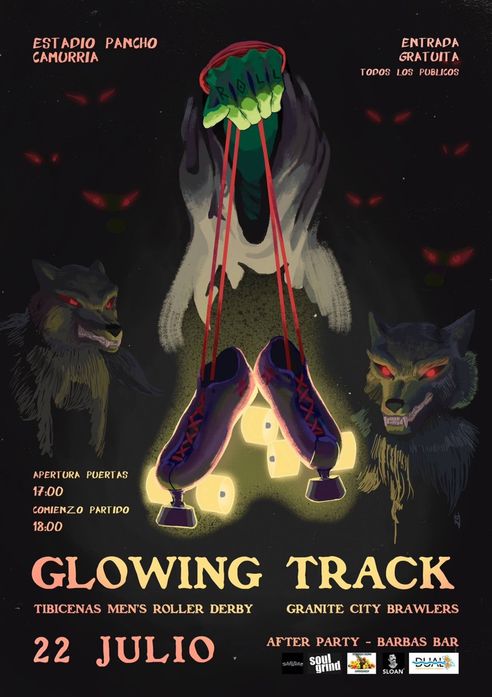
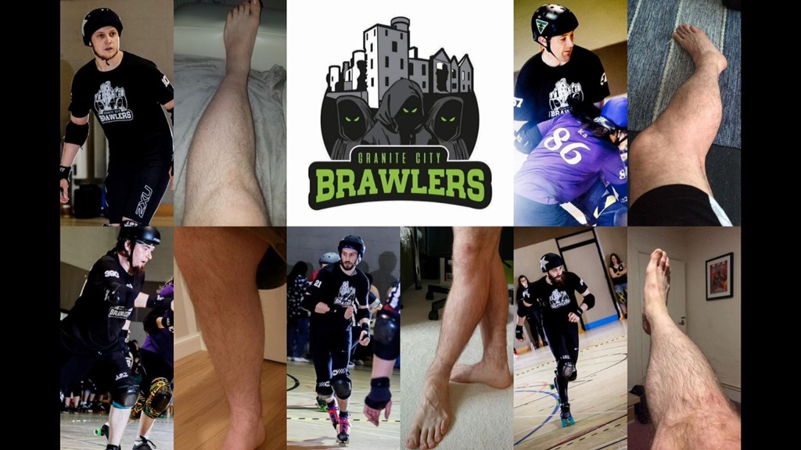

Non-US/Canadian Derby Roundup: 29th/30th July Edition
As is traditional, we’re bringing you another roundup of the upcoming Roller Derby this weekend from across the world. As always, we’re using Flat Track Stats for much of this information – for regions with less good coverage, we also do a bit of intensive searching using a tool which scans the Facebook events of Roller Derby leagues known to Derby Listing.
Predictions of bouts are from FTS, if possible, and from our own SRD Rank where FTS cannot make predictions (for example: Latin America, or non-MRDA men’s bouts). We're working toward our August SRDRank release, which we expect to come out before the next of these posts. (SRDRank also has recent WFTDA rankings, including the 31st June ranking, as well as SRDRank, and allows you to make predictions from them.)
If we’ve missed you from our roundup, please let us know! [Or add yourselves to FTS and/or Derbylisting]
Scotland
This weekend Scotland has one tournament, and a few other things:
- Friday, Dundee: Dundee Roller Girls host this month's all-gender open scrim, for anyone mins-passed who wants to come along [EVENT]
- Aberdeen: Granite City Roller Derby host Scottish Sevens - a classic seven-teams, seven-skaters, 21 minutes Derby Sevens tournament. [EVENT]
- Glasgow: Glasgow Roller Derby host a board-games cafe fundraiser - come and play games with them! [EVENT]
UK
British Champs is approaching the end of the season, with several divisions complete, but there's still bouts to come (and in August):
- Durham, England hosts the Tier 4 N, in the last fixtures of that division. The hosts Durham Roller Derby play their fellow Durham team, Durham City Rolling Angels, York Minxters take on Grimsby's Grim Reavers, and Wakefield's Wakey Wheeled Cats play Mansfield Roller Derby [FTS Tournament][EVENT]
- London, England hosts the Tier 2 South, in the last fixtures there. London Rockin' Rollers host, and play Royal Windsor Roller Derby, Swansea City Roller Derby play Taunton's SWAT, and Kent Rollergirls take on High Wycombe's Big Bucks High Rollers. [FTS Tournament][EVENT]
Outside of Champs there’s a few things going on:
- Oldham, England: Rainy City Roller Derby host a double header, as they welcome Reims' Beastie Derby Girls across from France to play Rainy B, the Bet Lynch Mob [FTS], and North Wales Roller Derby B, the ZomBs [FTS][EVENT] (SRDRank favours the visitors from France here)
- Sunderland, England: Sunderland Roller Derby host Newcastle Roller Girls' C team, the North Cs [FTS][EVENT] (SRDRank predicts a pretty close game, taking into account HTA)
- Bristol, England: Bristol Roller Derby host a double header with an international theme: Bristol B facing Hannover's Demolition Derby Dolls [FTS], whilst Bristol A take on Portsmouth's Scurvy Wenches [FTS] [EVENT] (SRDRank predicts a strong performance from the home teams.)
- Lincoln, England: Lincolnshire Bombers host their annual Super Summer Raffle fundraiser [EVENT]
- Nottingham, England: the Hellfire Harlots are... probably... holding a sponsored skate-a-thon, but their event page is not that detailed. [EVENT]
- Sheffield, England: Sheffield Steel Roller Derby are supporting Pride Sheffield this weekend! [EVENT]
- Brighton, England: Brighton Rockers are holding a live bands party to fundraise to go and play over in Ireland [EVENT]
- Sunday, York, England: as we mentioned in our catchup with them, York Minxters are hosting an end-of-T4-North scrimmage!
Europe
In Europe, most of the National tournaments have completed, but there's still derby, and international event, and one national fixture:
- Friday, Percoto, Italy: Basso Friulana's Banshees Roller Derby host an end of season party [EVENT]
- Toulouse, France: Toulouse's Quad Guards host the first ever MRDA Qualifiers in Europe, Harvest of Champions. Teams competing to qualify for MRDA Champs here: the hosts, Newcastle's Tyne and Fear, Manchester's Chaos Engine, Paris' Panam Squad and Lincolnshire Rolling Thunder [FTS Tournament][EVENT] (SRDRank favours the hosts, and Tyne & Fear to top the table, but it's a closely ranked set of teams, so upsets are possible.)
- Nürnberg, Germany: Sucker Punch Roller Derby host a Bundesliga div 3 bout against Riot Rockets Liepzig [FTS Tournament][EVENT]
- Munich, Germany: Munich Rolling Rebels host a double header: Munich A versus Bordeaux Club [FTS], and Munich B (the Municorns) versus Innsbruck's Fearless Bruisers [FTS] [EVENT] (SRDRank favours the hosts)
- Münster, Germany: Zombie Rollergirls Münster have a fresh meat recruitment day [EVENT]
- Hamburg, Germany: Harbor Girls Hamburg are part of an ongoing "St. Pauli's Strong Women" exhibition event, which starts Saturday, and runs through September! [EVENT]
- Stuttgart, Germany: Stuttgart Valley Roller Girls host a double header: South German Men's Roller Derby versus Dijon's La Raclée [FTS], followed by the hosts' B team, the Bad Seeds, taking on the Freiburg's Blockforest Roller Girls [FTS][EVENT]
- Berlin, Germany: Bear City Roller Derby and Berlin Rollergirls host a double header: Berlin versus Frankfurt's Roller Grrrl Gang [FTS], and Bear City with a "challenge bout" [EVENT]
- The Hague, Netherlands: The Parliament of Pain are turning 6 years old, and to celebrate they're holding an all-gender scrim, with randomly changing "special rules"... and a BBQ [EVENT]
- Dublin, Ireland: Dublin Roller Derby host Norfolk Roller Derby for a double header - Dublin B versus the Norfolk Brawds [FTS], and Dublin C versus a "mixed team", which FTS thinks is the Black Shucks [FTS] [EVENT] (SRDRank favours the hosts)
- Sunday, Eindhoven, Germany: Rockcity Rollers are hosting a fresh meat night recruitment night [EVENT]
- Monday, Zürich, Switzerland: the second of Zürich City RollerGirlz' tryout/recruitment nights [EVENT]
Pacific
In Australia and New Zealand:
- Christchurch, New Zealand: Otautahi Roller Roller Derby host Wellington's Richter City B, the Convicts [FTS][EVENT] (SRDRank favours the visitors)
- Wangarei, New Zealand: Northland Nightmares host a double header - a Junior derby game from Northland Jrs, the Hell Razors, followed by Northland's Hell's Wives versus Napier's Bay City Rollers [FTS][EVENT] (SRDRank favours the visitors)
- Taupo, New Zealand: the Huka Dolls host Kapiti Coast Derby Collective in a prom-themed bout... [FTS][EVENT] (SRDRank favours the hosts.)
- Nelson, New Zealand: the Sirens of Smash host a home-teams game, with the theme Zombies versus Girl Guides! [EVENT]
- Campbelltown, SA, Australia: Murder City Roller Girls host a double header, as Mt Barker's mixed-gender Rockabellas Roller Derby League play a home-teams game, followed by a home teams game from Murder City - Slamazons v Dames of Hazzard [EVENT]
- Caloundra, QLD, Australia: the Coastal Assassins Roller Derby League host Sun State Roller Girls' Killer Bees [FTS][EVENT] (SRDRank favours the visitors.)
- Sunday, Katoomba, NSW, Australia: Blue Mountains Roller Derby League host the next fixture in the 5x5 Roller Derby Championship [FTS Tournament][EVENT]
- Western Sydney vs Newcastle (A tier)
- Maitland vs Hawkesbury (B tier)
- Varsity vs Sydney (A tier)
- Blue Mountains vs South Side (B tier)
- Sunday, Brisbane, QLD, Australia: Sun State Roller Girls hold their New Recruits - On Skates Session (for newbies through to transferring skaters or officials) [EVENT]
- Sunday, Cairns, QLD, Australia: Reef City Rollergirls are holding their fresh meat intake [EVENT]
- Sunday, Mackay, QLD, Australia: Mackay City Roller Maidens have their fresh meet intake [EVENT]
- Sunday, Hobart, Tasmania: Convict City Rollers host a Rumble in the Jumble Market, full of all kinds of stalls. [EVENT]
- Sunday, Westbury, Tasmania: Devil State Derby League host an open scrim (mins-passed only) [EVENT]
- Monday, Walkaway, WA, Australia: Sin City Rollers of Geraldton are hosting the first of a series of fresh meat intake events [EVENT]
- Late addition: Brisbane, QLD, Australia: The Guild of Roller Derby host a coed/OTA/all-gender double header, with (apparently) entirely open-subscription teams. [EVENT]
Latin America
In Latin America, there's the usual tournament and other things :):
- Bogotá, Colombia: the 4th District tournament has a two-day finals and semifinals scheduled for this weekend, but there is little information so far. (Update: the schedule is for next weekend, we think?)
- Buenos Aires, Argentina: 2x4 Roller Derby host their home-teams tournament, as the Bully Chicks, Cowgirls from Hell and Bloody Furias all compete for the cup. [FTS 1,2,3][EVENT]
- Mar del Plata, Argentina: MDQueens host a "triangular" tournament, with the hosts, Sailor City Rollers' Sea Monsters, and MDQueens' B-team Royal C all playing each other. [FTS 1,2,3][EVENT]
- San José, Costa Rica: Dark Side Roller Girls host the third edition of "Rock and Derby", an event bringing together Costa Rican bands Bad Words and The Knives, all kinds of skate and dance skills (break dancing, skateboarding and inline) as well as, of course, Roller Derby! [EVENT]
- Itzapalapa, Mexico: Atómicas Roller Derby host LRDCM (Mexico City)'s Tekillerass [FTS][EVENT] (SRDRank can't predict this due to lack of scores from the Atomicas)
Africa and Middle East
- This is quiet again to our knowledge.
International Events
Whilst we normally don't cover events in the USA and Canada, we'd like to make a shout-out to the biggest event in Roller Derby, by some measures: Rollercon. Increasingly, Rollercon is attended by skaters from across the World - and this Rollercon hosts both a National Teams bout (Korea versus Philippines), and several other reps from other National Teams (including Team Russia Roller Derby).
Granite City Roller Derby update: British Champs T3 and beyond
We've been a little remiss with our British Champs Northern Divisions updates since the middle of the season, so we're back a with a special catchup with our teams from each Tier, continuing with Tier 3's Granite City Roller Derby!
 GCRD!
GCRD!
Granite City's Northern Fights had an exceptional 2016 in Champs, entering Tier 3 in 2017 by promotion after topping the table. They've continued their excellent Champs performance in Tier 3 - they currently top the table here as well, unbeaten, with extremely strong victories in 3 of 4 of their games so far. (The only close game was their first, against Halifax's Bruising Banditas.) The rest of the Tier 3 Champs table is more even at the moment with, tentatively, Auld Reekie's Reserves and the newly-rebranded North Wales Roller Derby in the most likely places to take the second top spot. We'll know more after the second-last fixtures of the Tier, today, hosted by North Wales, with the final bouts happening August in Edinburgh as Auld Reekie host.
Northern Fights co-Captain, Berocca Bama had the following to say: "2017 Tier 3 North has been a very exciting and challenging time for the Northern Fights of GCRD. As a result of hard training and solid dedication of the players and league, we have really grown and bonded as a team since Tier 4 in 2016 which meant we felt strong to compete in Tier 3 North 2017 and the results so far are far beyond our wildest dreams.
We have had so many enjoyable games, the most thrilling of which was against ARRG B. The team that ended our winning streak in 2016, we knew ARRG were going to be really tough opponents. We are sure anyone who was there to see this Champs game would agree it was a nail biter to the end!
We are looking forward to playing the Furness Firecrackers in the final Champs game in August; we know they'll bring it! It's a very important game for us, as a victory here should see us through to play-offs, if our maths is right..."
Granite City are also hosting events outside of Champs, starting with their very own tournament in a weeks time, the 29th of July! Scottish Sevens will be the most heptamerous of Sevens tournaments, with seven co-ed/OTA teams competing, each with the traditional seven skaters, in 21 minute games.
And after Champs Tier 3 North comes to an end in August (except for the Tier 3 promotion playoffs, 16/17 September), the Northern Fights will be hosting 2 games of their own, up in Aberdeen. These will also be great opportunities to see GCRD's B team, the Fight Hawks, as both events are double headers! We don't have dates for these events yet, but of course we will feature them as soon as we have more information...
British Champs Tier 3 N Fixture (22 July Today!): https://www.facebook.com/events/863580253744360/
British Champs Tier 3 N Final Fixture (12 Aug, Edinburgh): https://www.facebook.com/events/479889502352774/
Granite City Roller Derby host Scottish Sevens (29 July): https://www.facebook.com/events/1468759543169257/
York Minxters update: British Champs T4 and beyond
We've been a little remiss with our British Champs Northern Divisions updates since the middle of the season, so we're back a with a special catchup with our teams from each Tier, starting with Tier 4 North's York Minxters!
 York Minxters Logo (Credit: York Minxters)
York Minxters Logo (Credit: York Minxters)
As the season is closing out, the Minxters will be playing their last bout of their Division of the Tier on July 29th. With three teams in the Division all with a single win (York, Grimsby and Durham Roller Derby), this bout will play an important part in deciding the final table ordering. Hosts Durham Roller Derby will play their fellow Durhamites, Durham City Rolling Angels, in the other decisive bout in the fixture (Wakey Wheeled Cats play Mansfield in the third bout... but Wakefield can't be knocked off the top spot according to the Champs table - and both teams will be promoted to Tier 3 regardless, as they have an unassailable grip on the top 2 places).
Minxters Captain Gem O'Cide is excited about the bout, "Our final Champs game on July 29th is a triple header. We take on our lovely friends Grimsby and its a game we have been looking forward to - it's d always hard to hit the ones you love.. and I think war paint will be caked on so we can ignore the smiles... as a team we have decided on a theme.. AND we don't do things by halves!".
And the rest of the team will be celebrating surviving their first ever tournament series the day after, July 30th, with a closed, mixed scrim for skaters from all the teams in Tier 4 North, as well as other "Tier 4 level" teams. The Minxters describe it as a "celebration of everything we've achieved competing in our first championships", "a super casual affair full of fun and welcoming newer skaters, refs and officials to mark the end of champs and the start of the next season". Any skaters of the right level who are interested in joining in should do so quickly, as the event is almost at capacity.
After recovering from this, the celebrations won't stop for York Minxters: a month later, August 20th, they'll be giving fans the chance to see the rising stars of the next season, as their last fresh meat intake hold their debut exhibition bout... as well as a "meet and greet" after the bout, for those interested in signing up themselves.
An open-subscription bout for all rookie skaters, this has proven so popular that skater tickets sold out in just 3 days - although there is a reserve list for those still interested. The team are still looking for a full officiating crew, so Referees and NSOs are welcomed! Gem O'Cide adds, "The theme is Disney vs Superhero* and we sold out much faster than we expected - which we are super happy with; we're already planning part two! The current rostered skaters have a chance to bench and NSO to thank all the intake for all their hard work over the last 6 months. These are just our first planned off-season scrims.. there will be much more from the Minxters in the rest of 2017!"
 The Minxters You Could Be Joining (Credit: Sir Snaps-A-Lot)
British Champs Tier 4 North, final fixture (29th July, Durham) https://www.facebook.com/events/1486265868090310/
Post-Champs Tier-4 Scrims (30th July, York): private event - contact York Minxters directly to inquire about free spaces.
Rookie and Fresh Meat Debut Exhibition (20th August, York): [sold out - keep checking for reserves] https://www.facebook.com/events/1949945005262074/
Meet and Greet / Signup (20th August, York): https://www.facebook.com/events/1910573672544381/
*Given that Disney own Marvel now, this is something of an internal battle!
DRG's Bonnie Colliders Battle Bairn!
Dundee Roller girls' are hosting their second home game this season as a single header! On the 22nd of July at the D.I.S.C. Dundee, the Bonnie Colliders are taking on Bairn City (& pals!) which looks to be a mighty match! With doors opening at 12:30 and first whistle coming in at 1pm, it's gonna be a short and sweet single header. Differing from DRG's usual doubles hitters, these two familiar sides will most certainly make the trip worth while!
 We thought we would catch up with the Bonnie Colliders Co Captains for 2017, Breezy Does It #289 and HullabaLou #17, to learn a bit more about leading and shaping a B team!
We thought we would catch up with the Bonnie Colliders Co Captains for 2017, Breezy Does It #289 and HullabaLou #17, to learn a bit more about leading and shaping a B team!
[gallery ids="22420,22421" type="circle" columns="2"]
Q1: How has the season gone so far for you guys? You've have a few games already and you seem to come out strong both sides.
Breezy: This season has been amazing so far, we've played those two games and won both, which is super exciting! The team is really starting to gel together and we are getting better every time we play. We've had a few newer skaters join us and they are coming on great and are fitting in well with the team.
HullabaLou: It's just been so epic this season, I am so so proud of everyone! To see our wee team taking the skills that we drill together every week at training and scrims, and put them into practice during games is fantastic – whether it’s fancy new toe stop spins, some super controlled one-one blocking or crushing offense; the commitment and effort from every person on the team is something that I respect hugely and do not take for granted as a Captain.
Q2: And so the Colliders have played a Bairn side a few times, with the most recent in 2015 [FTS]. How does that change your look on this match-up?
B: I was off on maternity for all of 2015 so unfortunately wasn't part of the team on that one but I was there for the previous year and it was such a tough game! Bairn have continued to grow so much since then, really we're looking at them as a brand new opponent. Which for a lot of our Colliders this season - they will be!
H: The 2015 game, was one of the firsts for quite a few of us who had just been rostered for the B team, and was definitely quite an experience for us haha! Bairn are so lovely and we genuinely can’t wait to play them again, but will definitely be needing as many of our Collidoscopes (our loyal fans) to support us as possible!
Q3: How do you guys approach a game when you are captaining, what goes through your mind? B: I approach all games in a similar manner, nervous anticipation! The difference as a Co-Captain is that I like to check in with all the skaters to find out how they're feeling, as Lou and I want each skater to enjoy themselves and feel comfortable on game day.
H: All we want as Captains is to ensure our team has an absolute blast on game day, I just want to help them smash their goals and whip out those hard-practiced skills! Colliders are definitely all about soaking up the sheer enjoyment of simply playing roller derby together! To quote our wonderful co-chair Milky “It’s just a made-up game on roller skates” and so I try to focus on that…we are from Fundee after all.
Q4: With the Silvery Tayzers (Dundee's A team) getting quite a lot of focus now with the league being full WFTDA members, do you feel that adds more pressure for you guys, or is it the opposite and you loose some track time as a B team?
B: DRG train as a league, first and foremost. We all skate together. We have skaters who've just passed their minimum skills alongside our Team Scotland skaters. It is a huge benefit to all our skaters as we work together to push each other on in every aspect. As a team, the Colliders do get lots of track time together to work as a unit, and practice our tactics and skills, but training alongside the Silvery Tayzers really pushes us out of our comfort zones and helps us develop further.
H: DRG definitely think of ourselves as a league rather than 2 teams – we train together, scrim together and thoroughly support each other; the success of the Tayzers and their sweeeeet wftda ranking (266th!) [16/07/2017 FTS] has only boosted our league spirit. And likewise when the Colliders smash it, the mad support from the rest of the league is just unparalleled. Personally, that’s one of the things I love most about DRG: Our wonderful bouting committee have always placed an equal importance on getting games for both Colliders and Tayzers….so short answer – no, we never lose track time!
Q5: With that in mind, what do you guys aim for, for yourselves and your team? It must be hard to maintain such a close-knit team, with skaters moving on to the A team or with the new intake coming up.
B: My aim is to work alongside all of our current skaters and those moving up from the new skater programme to encourage them to practice in the hopes that our team can grow stronger. As for keeping the team close knit, I think that comes from our training atmosphere. Lou and I are very open in terms of communication and encourage skaters to bring any issues to us in the hopes that everyone feels driven but not pushed, as being a Collider is always about having the best experience possible and taking away as much as you can from both training, scrimmage and game days!
H: I think that as a team we definitely drive ourselves forward and regardless of experience-level our training committee has always worked us hard to constantly improve our play. Being a B team, the roster is a lot more dynamic; newer skaters come up, more experienced skaters move to the A team, and it changes a lot. We do actively focus on learning how each other blocks/jams so can we gel on track but because we all train together, even when a skater does reach a certain level experience and makes that tough decision to bout exclusively with the A team, it doesn’t really feel like we’ve lost them because we'll be drilling/scrimming with them the week after anyways. Saying that we did have a very emotional locker-room-team-cry after a speech from last season’s stepping down Captains… but I think that just goes to show how much we bond as a team…or perhaps how emotionally unstable a bunch of us are…possibly both.
To find out more about the upcoming game (Saturday 22nd July) Check out the facebook event page here: Colliders vs Bairn and pals!
Doors open: 12:30 Tickets: £5 (on the door)
Non-US/Canadian Derby Roundup: 22nd/23rd July Edition
As is traditional, we’re bringing you another roundup of the upcoming Roller Derby this weekend from across the world. As always, we’re using Flat Track Stats for much of this information – for regions with less good coverage, we also do a bit of intensive searching using a tool which scans the Facebook events of Roller Derby leagues known to Derby Listing.
Predictions of bouts are from FTS, if possible, and from our own SRD Rank where FTS cannot make predictions (for example: Latin America, or non-MRDA men’s bouts). Our new SRD Rank for July is out (pending updates as late scores trickle into FTS), with the usual map mode, score predictions and the rest, for all teams in the world. (It also has some WFTDA rankings, including the 31st June ranking, as well as SRDRank.)
If we’ve missed you from our roundup, please let us know! [Or add yourselves to FTS and/or Derbylisting]
Scotland
This weekend Scotland has a 2 events at home, and three away:
- Glasgow: Glasgow Roller Derby host their "Harder Faster Better Stronger" pre-mins bootcamp [EVENT]
- Dundee: Dundee Roller Girls B, the Bonnie Colliders host Falkirk/Stirling's Bairn City Rollers' Central Belters [FTS][EVENT]
- Monday, Glasgow: Resistance Roller Derby host another Monday Adult Skating Session Fundraiser to support Glasgow's only LGTBQIA inclusive Junior Derby team [EVENT]
UK
British Champs is back after their break last weekend,
- Wolverhampton, England sees the Tier 3 West, as the hosts Wolverhampton Honour Rollers play Milton Keynes Roller Derby, and Sheffield's Hallam Hellcats Roller Derby bout Leicestershire Dolly Rockit Rollers [FTS Tournament][EVENT]
- Ipswich, Suffolk sees the Tier 2 Men's as the hosts Suffolk Roller Derby play the Super Smash Brollers of Nottingham, Bristol Men's play London's Southern Discomfort B, and Wirral Pack Animals play Barrow-in-Furness' Barrow Infernos [FTS Tournament][EVENT]
- Queensferry, Flintshire, Wales sees the Tier 3 North, as the hosts North Wales Roller Derby play Spa Town Roller Derby of Harrogate, and rebranded "Furness Roller Derby" take on Auld Reekie Roller Girls of Edinburgh.[FTS Tournament][EVENT]
- Manchester, England sees the Tier 2 North, as hosts Manchester Roller Derby play Cambridge Rollerbillies, and Newcastle B (the Whippin' Hinnies) play Liverpool [FTS Tournament][EVENT]
Outside of Champs there’s a few things going on:
- Birmingham, England: Birmingham Blitz Dames' Bomb Squad take on Glasgow's Mean City Roller Derby (women) [FTS][EVENT]
- Croydon, England: Croydon Roller Derby hosts a double header, as Croydon Roller Derby A play Portsmouth Roller Wenches [FTS], topped by an open subscription rookie bout [EVENT]
- London, England: London Rollergirls host a double header, as London B, the Brawl Saints, take on Team Ireland Roller Derby [FTS], and London C, Batter C Power, play the Norfolk Broads [FTS][EVENT]
- Mansfield, England: Mansfield Roller Derby host the Stats How We Roll Officiating Bootcamp, for both NSOs and Referees [EVENT]
- there is a coed/OTA scrim to finish off the event, and allow the attendees to practice what they have learned. [EVENT]
- Sunday, Nottingham, England: England Men's Roller Derby host the first stage of tryouts for the 2017/8 team [EVENT]
- Sunday, Manchester, England: Manchester Roller Derby finish off their weekend post Champs by hosting a co-ed/OTA mixed scrim, announced just a day ago. [EVENT]
- Sunday, Oldham, England: Rainy City Roller Derby hold a pre-mins bootcamp. [EVENT] followed by a Tender Hooligans versus The World scrim [EVENT]
- Friday, Widnes, England: North Cheshire Victory Rollers host a Friday collaborative session of derby training [EVENT]
Europe
In Europe, there's still one National Tournament rumbling on:
- Mannheim, Germany: the Delta Quads host a Bundesliga div 2 bout against Riot Rollers Darmstadt [FTS Tournament][EVENT]
- Ulvila, Finland: Pori Rolling Brigade are holding a roller derby trial session! [EVENT]
- Paris, France: La Boucherie de Paris host a 2-day "round table bootcamp" to improve coaching and team management. The sessions will be lead by Manu and KB from La Boucherie de Paris, and Lo Ravage (Equipe de France Feminine) and Pepe Le Punch (Equipe de France Masculine) [EVENT]
- Nürnberg, Germany: Sucker Punch Roller Derby Nürnberg invite you to a summer fair! [EVENT]
- Monday, Hamburg, Germany: Harbor Girls Hamburg invite you to their one-week intensive Junior Roller Derby course. [EVENT]
- Tenerife, Spain: Tibicenas Men's Roller Derby host Aberdeen's Granite City Brawlers for the latters' first ever international bout! [FTS][EVENT]
- Navarra, Spain: Roller Derby Iruña's Naffariors take on Bilbao's Botxo Killers [FTS] [EVENT]
- Monday, Zürich, Switzerland: Zürich City Rollergirls host a roller derby tryout session [EVENT]
- Monday, Caen, France: Roller Derby Caen host the first of a series of Roller Derby tryout sessions, for potential recruits. [EVENT]
Pacific
In Australia and New Zealand:
- Adelaide, Australia: Adelaide Roller Derby's home teams season continues with a double header, as Mile Die Club play Road Train Rollers, Salty Dolls bout Wild Hearses [EVENT]
- Sunday, Adelaide, Australia: Light City Derby also have a home teams event, as [EVENT]
- Brunswick, Victoria, Australia: Victorian Roller Derby League host a fundraising trivia night [EVENT]
- Bundaberg, Australia: Rum City Derby Dolls host "Skate of Emergency", a two-day tournament raising funds for emergency services [FTS Tournament][EVENT]
- Cairns, Queensland, Australia: Reef City Rollergirls host Townsvilles Top Gun Rollers [FTS][EVENT]
- Sunday, Brisbane, Australia: Sun State Roller Girls host a derby info session for the interested, and their new recruits [EVENT]
- Sunday, Footscray, Australia: West Side Derby Dolls host a "Sunday of Scrimmages" open subscription event, with sessions for non-mins-passed (pre-mins) skaters, as well as those who have passed mins skills[EVENT]
- Sunday, Newcastle, NSW, Australia: Newcastle Junior Roller Derby host their next intake session! [EVENT]
- Sunday, Emu Plains, NSW, Australia: Hawkesbury/Hills Area Roller Derby host a "Christmas in July Roller Disco". [EVENT]
- Wellington, New Zealand; Richter City Roller Derby host their first home teams game of the season, with Brutal Pageant taking on Smash Malice [EVENT]
- Friday, Christchurch, New Zealand: Dead End Roller Girls host their own home teams exhibition bout - Pinups v Punks [EVENT]
- Monday, Mount Maunganui, New Zealand: Mount Militia Derby Crew start their Roller Derby Beginners course [EVENT]
- Okinawa, Japan: Devil Dog Derby Dames are joining with Okinawa Hash House Harriers for a Running of the Bulls event [EVENT]
Latin America
In Latin America, there's the usual tournament and other things :):
- Bogotá, Colombia: the 4th District Tournament continues, with its final fixture (added after the last one) before the Finals. It's a battle of AvB teams, as Rock N Roller Queens play their B team, Queens; Bogotá Bone Breakers play their B team, Baby Breakers; with the men's tier breaking the pattern, as Combativos play Maquina del Mal [FTS Tournament]
- Bahía Blanca, Argentina: the Brujas Roller Girls are hosting a Bingo fundraiser! [EVENT]
- Sunday, Buenos Aires, Argentina: 2x4 Roller Derby, ahead of their appearance at WFTDA Division 1 Playoffs, have an exhibition bout (which FTS holds is against NERD - it's not, it's against themselves?) [FTS][EVENT]
- Sunday, Salta, Argentina: Malditas Lisiadas Roller Derby host the first of a planned series of mixed-team derby tournaments, alongside skaters from Jujuy and Tucumán. The Aim is to strengthen and promote derby in northern Argentina. [EVENT]
- São Paulo, Brazil: the Thunder Rats Derby Squad host their next recruitment event [EVENT]
- Viña del Mar, Chile: Bototos Bandidos host a Coed/OTA Tournament, with teams representing Santiago, Chillan,
Osornoand Viña del Mar. [EVENT] - Late addition: Avellaneda, Buenos Aires, Argentina: Desalmadas Roller Derby host a 'cuadrangular' battle of rookie teams from Fawkes Roller Derby, Kamikazes Roller Derby, Bastadas Roller Derby and the hosts. 30 minute games let them do all 6 pairs in one day! [EVENT]
- Late addition: Sunday, Jose Marmol, Buenos Aires, Argentina: Volcánicas Roller Derby host an intake day... but with no Facebook event for us to link to. [EVENT FLYER]
- Late addition (event up today): Sunday, Buenos Aires, Argentina: Sailor City Rollers are holding a 3 hour bootcamp with coaches/skaters from both SCR and from the Argentine Men's team! [EVENT]
- Late addition (no Facebook event page!): Sunday, Toluca, Mexico: Roller Derby Toluca's Reptilias play Mexico City's Aniquiladoras[FTS][EVENT FLYER][New EVENT page]
Africa and Middle East
Two little things here:
Upcoming National Teams Bouts
With both World Cups now less than a year away - the Roller Derby World Cup in February, and the Men's Roller Derby World Cup in April, there's an increasing number of National Teams related fixtures being announced, as all the teams get in some practice, some visibility, and some fundraising opportunities.
It's easy to miss what's happening, so maybe it helps to keep them all in one place.
Here's the events we're aware of (and do please let us know if we've missed anything!)
Women's National Teams
15th July: Equipe de France play an exhibition bout hosted by Les Passeuses Dâmes [EVENT]15th July: Team Portugal have an open training session for Portuguese skaters [EVENT]
16 July: at least some of Team Germany are at Euro Derby Con participating in events [EVENT]
22 July: Team Ireland Roller Derby turn up to play London Rollergirls B, the Brawl Saints as part of a double header in London [EVENT]
29 July: Team Korea and Team Philippines make their world debuts at Rollercon, playing against each other on Saturday! [EVENT]
29 July: Team South Africa have their final round of tryouts! [EVENT]
5-6 August: Team England host Team Sweden, Team Finland and Team Canada for a weekend round-robin event, in Nottingham! [EVENT]
5-6 August: Aotearoa Roller Derby (Team New Zealand) play a black v white scrim, followed by a bootcamp run by their coach, Mick Swagger. [EVENT]
6 August: Team England will also be scrimming with an open subscription team after that round-robin [EVENT]
6 August, 20th August: Team West Indies scrim against all comers in two open subscription bouts in Bedford (6th) [EVENT] and Birmingham (20th) [EVENT]
3 September: Team Scotland will be taking on a scrimmage against an open subscription team [Applications open] [EVENT]
23 September: Équipe de France Feminine host a fixture against 2 undisclosed National Teams, in Tourcoing, France [EVENT]
8 October: Team Belgium host Team Italy and Team Netherlands for a triple header [EVENT]
11 November: Team Austria are hosting Team Germany and Team Switzerland for a triple header [EVENT]
12 November: Team Ireland are playing an undisclosed team in Dublin [EVENT]
19 November: Team Scotland are again scrimmaging with an open subscription team (applications open) [EVENT]
25 November: Team England take on an undisclosed team in Peterborough. [EVENT]
2-3 December: Team Wales welcomes undisclosed opponents to the Road to Manchester tournament! [EVENT]
Men's National Teams
(Some time during this period, Team Finland are planning... something.)15 July: Team New Zealand have their tryouts in Kawerau [EVENT]
23 July: Team England's Stage 1 Tryouts (open submission) happen in Nottingham [EVENT]
5-6 August: Team Spain host the Torneo Barcelona City... but aren't playing in it? [EVENT]
12 October: Team Wales have a mysterious event [EVENT]
18-19 November: Team Netherlands hosts Ireland, Belgium, Scotland, Spain and Italy in a "Road to Barcelona" event. [EVENT]
18-19 November: Team Germany hosts undisclosed opponents in a... "Road to Barcelona" event [EVENT]
25 November: Team England take on an undisclosed team in Peterborough (double header with Women's team above) [EVENT]
We're All Going on a Summer Brawliday
 Bout Poster courtesy of Tibicenas Men's Roller Derby
I had the opportunity to check in with captains Pudz and Momo to ask about how the team are preparing for their next game.
TMRD have previously played Madrid MadRiders but despite some serious snooping, I can't find any teams to link GCB to TMRD. Since this makes it super hard to make any predictions about the game, there is additional excitement. [SRDRank gives the Brawlers the advantage over their hosts, but with low certainty - Ed.]
You played Oldham earlier this year and were victorious, how are you feeling about taking on Tibicenas Men's Roller Derby? Have you seen them play before or met any of the players during your World Cup experiences?
Pudz
Nervous but excited at the same time. We've scoured the internet for footage to watch but come up short so are going into this game a little bit blind as to our opponent's style. Unless you count their uploads of the T Rex on skates, if the dinosaur gets rostered we'll be facing a new challenge!
Momo
We trained really hard on the run up to the Oldham game, I think we stepped up drastically from our previous game last year. We went back through the previous game and pin-pointed every weakness and focused heavily on certain aspects that were lacking; we're not perfect yet but the guys really worked hard and for the first time at the Oldham game we had in all sense's of the word: a team.
Tenerife is a complete wild card! None of us know what to expect from the team and I think a lot of the guys are underestimating how hot it's going to be; myself and Pudz have a good idea how hard it's going to be after playing in Canada [at MRDWC] last year. TMRD will have the advantage being used to playing in the heat, and I think we are only playing with 9* so it's going to be seriously tough. Whatever happens we'll do all we can do and have fun knowing we have a holiday after the game as well.
We haven't seen the roster yet and I'm not sure if anyone played in the World Cup but it's obviously quite possible.
*GCB will now be playing with 10 skaters
Tell me about your fundraising efforts to get the team and crew over to Tenerife
Pudz
Five of our Brawlers are doing a sponsored leg wax to help cover the costs of skater insurance and the bus to the game in Tenerife. Whichever Brawler has the most money against their name will be getting a nice pre holiday leg wax. #waxonwaxbrawff
Whoever has the highest funds against them is going to have an itchy time in the crazy heat!
 http://www.justgiving.com/crowdfunding/waxonwaxbrawff
What sort of special preparation are you doing as a team/individual for playing in such a super warm place?
Pudz
The team have been doing "jumper scrims" in preparation for the game to try and adjust to the heat. These have been met with sad faces from our peely wally Brawlers but have been good fun and shown off Raffers' fine selection of Christmas Jumpers.
We also invited some guests to scrim against the Brawler Tenerife roster as a warm up which went very well. Our Brawlers' hard work is paying off.
Momo
We've been training with jumpers on during scrims to help with heat training and our scrims are generally quite intense, almost "iron man" if you like, so it's good for the endurance, especially since we're playing with 9.
We had a scrim with the "Tenerife 9" vs the rest of the Brawlers, some GCRD members, and some Bairn City members last weekend, a good mixed bunch to help us prepare. They were great, totally mixed it up and they didn't take it easy on us! It went well and gave us a few more things to work on.
How does preparation for an international game differ to preparing for a local game?
Pudz
We have to think about things like jet lag [not to Tenerife though! - Ed], lower roster numbers due to the distance travelled and, most importantly, the bar order; "Tres sidras por favor!"
As a team we are very excited to represent Scottish roller derby on an international scale, strengthening the roller derby community even further.
Momo
Preparing for Tenerife seems a lot more labour intensive from an organising point of view. If it wasn't for Nikki, Brawlers' Bench Manager, sorting the entire thing out I think we'd be walking from one end of the island to the other to get to the game. I did my bit as well though: I organised a rainbow of the best beach towels Scotland's ever seen! We're obviously doing our heat training and some of us have been working on our after party stamina to last the entire holiday, I guess maybe some of the guys have been working on their beach bods, not likely but maybe....
We've lost a few skaters at the start of this year/ tail end of last year but we've gained some new young blood with loads of potential and honestly the Brawlers are the strongest we've ever been.
We're looking forward to what we have planned for the rest of 2017 and can't wait to see what 2018 brings!
 Photo Credit: Len Rizzo
Photo Credit: Len Rizzo
A huge 'thank you' to Pudz and Momo for taking the time to answer my questions!
I, for one, am so excited for the first GCB international game and wish the team loads of luck.
Also, there's still time to donate and nominate your favourite brawler for a cheeky leg wax! http://www.justgiving.com/crowdfunding/waxonwaxbrawff
The Brawlers/Tibicenas bout is in just 10 days - 22 July. The Facebook event is: https://www.facebook.com/events/1910383885902598/
Non-US/Canadian Derby Roundup: 15th/16th July Edition
As is traditional, we’re bringing you another roundup of the upcoming Roller Derby this weekend from across the world. As always, we’re using Flat Track Stats for much of this information – for regions with less good coverage, we also do a bit of intensive searching using a tool which scans the Facebook events of Roller Derby leagues known to Derby Listing.
Predictions of bouts are from FTS, if possible, and from our own SRD Rank where FTS cannot make predictions (for example: Latin America, or non-MRDA men’s bouts). Our new SRD Rank for July is out (pending updates as late scores trickle into FTS), with the usual map mode, score predictions and the rest, for all teams in the world. (It also has some WFTDA rankings, including the 31 May ranking, as well as SRDRank. We will be adding the WFTDA July ranking as soon as it is released.)
If we’ve missed you from our roundup, please let us know! [Or add yourselves to FTS and/or Derbylisting]
Scotland
This weekend Scotland is having a bit of a rest after last weekend:
- There are no public bouts this weekend in Scotland.
- Friday, Dundee: Dundee Roller Girls host their regular open scrims [this one is open to all female/non-binary identifying skaters] [EVENT]
- (Edinburgh: Lothian Derby Dolls are playing New Town Roller Girls in a closed scrim.)
UK
British Champs is having a quiet time:
- Literally nothing is scheduled for this day!
Outside of Champs there’s a few things going on:
- Friday, Newcastle: Newcastle Roller Girls host their home teams tournament, the War Lasses, Blue Star Bruisers and the Toon Raiders all competing in short-format games for the cup. [EVENT] (This is preceded by the Newcastle Junior Roller Derby tournament!)
- Halifax: the third Last Action Heroes exhibition tournament is happening, organised as always by Talk Derby To Me's King Crazy. As always, 8 action movie themed teams play it out for the trophy. [EVENT]
- Eastbourne: the 2017 Eastbourne Extreme (outdoor roller derby tournament event) happens too! Itinerary still to be published... [EVENT]
- Wolverhampton: Wolverhampton Honour Rollers are hosting a birthday party picnic (weather permitting!) [EVENT]
- Grimsby: Grimsby Roller Derby host a Coed (OTA) Scrim, open subscription, closed to the public. [EVENT]
- Sunday, Birmingham: the Crash Test Brummies host an open scrim [EVENT]
Europe
In Europe, there's one giant thing which we have to mention first :
- Barcelona, Spain: from Thursday through the weekend, Euro Derby Con returns to Barcelona, hosted by Track Advantage. The European answer to Rollercon is too full of challenge bouts, bootcamp sessions and other things for us to summarise, so just follow the event link! [EVENT]
- Ruhrpott, Germany: Ruhrpott Roller Girls host a double header: a Bundesliga div 2 bout between Zombie Rollergirlz Münster and Mannheim's Delta Quads [FTS Tournament], followed by the hosts B versus Darmstadt B [FTS] [EVENT] (SRDRank rates the Delta Quads highly, and favours the hosts v Darmstadt)
- La Roche sur Yon, France: Les Passeuses Dâmes host a national team exhibition bout, as Équipe de France (Feminine) show off their talents. [EVENT]
- Hamburg, Germany: Harbour Girls Hamburg host Zurich City Rollergirlz for the last bout of the season! [FTS][EVENT] (SRDRank considers this a very close bout; WFTDA favours Zurich more strongly.)
- Barcelona, Spain: Flat Track Stats lists a bout between Barcelona and Roller Derby Milano... but there's no event in Facebook yet. [FTS]
- Lisbon, Portugal: Team Portugal open their training session to other Portuguese skaters, for the good of Portuguese roller derby! [EVENT]
- Joensuu, Finland: Joensuu Roller Derby host a 6 team Sur5al tournament [EVENT] as part of the local Ilosaarirock music festival [EVENT]
- Sunday, Bergamo, Italy: the Crimson Vipers invite everyone to a punk rock concert with them [EVENT]
- Thursday, Munich, Germany: Munich Rolling Rebels host their regular open-to-public scrimmage session, followed by a retreat to the bar for meet-and-greet. [EVENT]
Pacific
In Australia and New Zealand:
- Tuggeranong, ACT, Australia: Varsity Roller Derby League host a "Power Day" of derby, a quintuple header! [EVENT]
- South Sea Sirens Roller Derby Banshees vs VDL Rogue Scholars (Women's) [FTS]
- Sydney City SMASH v VDL Smackademics (Mixed/Coed/OTA) [FTS]
- Inner West Roller Derby Skatecrashers V SSRD Banshees (Women's) [FTS]
- VDL Capital Carnage v SMASH (Men's) [FTS]
- VDL Rogue Scholars v IWRDL Skatecrashers (Women's) [FTS]
- Friday, Newcastle, New South Wales, Australia: Newcastle Roller Derby League host a "viper session" - a high-intensity open training session! [EVENT]
- Friday, Gladstone, Queensland, Australia: Gladstone PCYC Roller Derby host an all-ages Masquerade Roller Disco as a fundraiser [EVENT]
- Toowoomba, Queensland, Australia: Toowoomba City Rollers host a double header, with Toowoomba playing North Brisbane Rollers' Team Griffin [FTS], ahead of a black-v-white men's game with open subscription [EVENT] (SRDRank favours Team Griffin)
- Armadale, Western Australia: the Dread Pirate Rollers host a double header, with the hosts playing South Australia's Rockabellas Roller Derby League [FTS], ahead of an mixed coed game [EVENT] (SRDRank strongly favours the home team, but there's not much data for either to go on!)
- Geraldton, Western Australia: Geraldton Sin City Rollers host the 4th annual Sin City Slam, with Sin City Rollers taking on a mixed team in a Guardians of the Galaxy themed event [EVENT]
- Napier, New Zealand: Bay City Rollers host a double header against Swamp City Roller Derby of Palmerston North - A v A [FTS] and B v B [FTS] [EVENT] (SRDRank favours the hosts in the B bout, but the visitors for the A).
- Whangarei, New Zealand: Northland Nightmares Roller Derby host Taranaki Roller Corps of New Plymouth for a bout [FTS][EVENT] (SRDRank favours the hosts)
- Lower Hutt, New Zealand: Hutt Valley Vanguard host a "Karma Keg" fundraiser [EVENT]
- Okinawa, Japan: Devil Dog Derby Dames beginners intake begins [EVENT]
- Sunday, Brisbane, Australia: Brisbane City Rollers hold an intake day (postponed from last week) for all genders. [EVENT]
- Late addition: Cessnock, New South Wales, Australia: the 2nd round of the Northern Division of the Eastern Region Season Tournament sees Maitland Roller Derby, Port Macquarie Roller Derby League, Outcast Derby, Northern Beaches Roller Girls, and Coffs Coast Derby all play fixtures [FTS][EVENT]
- Late addition: Western Sydney Rollers host the final of their home season, as B52 Bombshells play Blackheart Brawlers for the championship [EVENT]
Latin America
In Latin America, there's the usual tournament and other things :):
- Lanús, Buenos Aires, Argentina: the Atomic Bombs Roller Derby host No Excuses Roller Derby (NERD) [FTS] in a double-header with a open-subscription Coed/OTA bout[EVENT] (SRDRank favours NERD)
- Blumenau, Brazil: The Iron Ladies Roller Derby are hosting a weekend of roller derby all in one event, designed to help all of Brazilian Roller Derby [EVENT]
- Peñalolén, Chile: Metropolitan Roller Derby host a home teams tournament, with Anfetamina vs Hotchili and Histeria vs Caníbales Dark [EVENT]
- Comodoro Rivadavia, Argentina: Comodoro Roller Derby host a bootcamp (run by Sailor City Rollers' Bloody Jam), with attached black v white scrimmage, coed. [EVENT]
- Lima, Peru: Toxic Lima Roller Derby organise a fundraising fair, with a huge range of items on sale [EVENT]
- Sunday, Bogotá, Colombia: the end of the 4th District Tournament approaches, with Central Derby DC hosting originally just two bouts; Combativas Revoltosas versus Rock N Roller Queens B ("Queens"), and Fugitivas versus Maquina del Mal Feminino. Due to complications earlier in the series, two more have been added: Rock N Roller Queens versus Bogotá Bonebreakers B, and Central Derby DC themselves versus Bonebreakers A. These are the last fixtures before the semifinal and final on the weekend of the 30th. [FTS Tournament][EVENT]
- Sunday, São Paulo, Brazil: the Thunder Rats Derby Squad are playing Grey City Rebels (also São Paulo) in a "friendly" game. [FTS][EVENT]
- Sunday, Buenos Aires, Argentina: Sailor City Rollers host a double header, with their Tsunami Bombs (B) playing NERD [FTS], and the Sea Monsters (C) taking on Cosmic Clan (Wonderclan B) [FTS] [EVENT] (SRDRank favours NERD, but thinks the C bout will be really close!)
- Sunday, Buenos Aires, Argentina:... NERD also host their own double header(!), as Cholas Roller Derby take on Dirty Fucking Dolls [FTS], whilst NERD's Insurrexion play Kamikazes [FTS][EVENT]
- Late Addition: Sunday, Mexico City, Mexico: CDMX's Burdel Zombie host a triple-header "triangular" tournament with the hosts playing against Toluca's Átomicas, and Morelia's Ovejas Negras [FTS 1,2,3][EVENT?]
- Late Addition: Sunday, Mexico City, Mexico: the "other" Mexico City league, Mexico City Roller Derby, also have a bout, as their Quadtlicues face Discordias Roller Derby [FTS][EVENT]
Africa and Middle East
This section is quiet again.
Upcoming Events
Our upcoming events for this week are the competing Road to Barcelona Men's National Teams events, both on the 18th/19th November in Europe!Team Germany Men's are hosting one of the events, with no announced teams (other than Germany).
Team Netherlands Men's are hosting the other event, with Ireland, Belgium, Scotland, Spain and Italy confirmed, as well as the hosts.
(This leaves the Nordic teams, England, Wales, and Central Europe for Germany to persuade over to their event.)
We're raising this here just so no-one is surprised by the two events fighting with each other!
World Roller Derby Rankings - Top 40s, Movers, Shakers.
There's an understandable level of anticipation surrounding the announcement of the next WFTDA Rankings, in a week or so's time, as they have the material effect of determining who makes it to WFTDA Playoffs. (Even if teams decline the invitation, then the ranking still determines who filters in from the bottom to replace them.)
Similar excitement, of course, surrounds the MRDA rankings, and all of the National rankings and placements which are slowly being announced as the various National seasons draw to a close (Finland's is determined this weekend, for example).
However, sometimes it is interesting to take a more Global view. Not all the best teams in the world are members of WFTDA or MRDA, and of course, few rating or ranking schemes attempt to transcend gender in comparing Men's to Women's to Junior derby (or even recognise the existence of Coed/OpenToAll derby at all!).
This lack is one reason why we developed the SRDRank rating and ranking system (the other reason being the lack of ratings or coverage for Latin America). While you all wait to see who gets to go to WFTDA Playoffs, we're going to indulge ourselves by working on that Global scale.
(Sadly, as SRDRank depends on records in Flat Track Stats, some teams may be unfairly represented here, as they simply don't bother uploading data to FTS. We're actively working on this ourselves, but we really need the teams themselves to engage as well - especially, sadly, in those Latin American regions which are also unfairly lacking in coverage.)
All of the top X listings can be viewed (and interactively manipulated) via our SRDRank main page (which also provides a map view, and score predictions, for both SRDRank and WFTDA), which is also prettier!
Let's start with the potentially most controversial result... the Global (All Gender) Rankings for 4 July 2017, Top 50. This covers both A and B teams, which matters only a little bit - most of the teams in the Top 50 are A teams. Blue is Men's teams, and Green is Women.
(We should note, and the main SRDRank clique analysis makes clear, that the relative rankings of Mens and Women's teams are the least certain thing here - perhaps more Men's teams should play Women's teams, and help to improve our data here ;) )
| 1 | Saint Louis GateKeepers | 6.102 |
| 2 | Your Mom Men's Roller Derby | 5.936 |
| 3 | Bridgetown Roller Derby | 5.826 |
| 4 | Victorian Roller Derby League | 5.653 |
| 5 | Southern Discomfort Roller Derby | 5.625 |
| 6 | Gotham Girls Roller Derby | 5.562 |
| 7 | Rose City Rollers | 5.467 |
| 8 | Angel City Derby Girls | 5.449 |
| 9 | San Diego Aftershocks | 5.377 |
| 10 | Texas Men's Roller Derby | 5.357 |
| 11 | Denver Roller Derby | 5.223 |
| 12 | Texas Rollergirls | 5.103 |
| 13 | Puget Sound Outcast Derby | 5.068 |
| 14 | Pennsylvania All-Stars Roller Derby | 4.997 |
| 15 | London Rollergirls | 4.980 |
| 16 | Arch Rival Roller Derby | 4.974 |
| 17 | Magic City Misfits | 4.856 |
| 18 | Minnesota RollerGirls | 4.847 |
| 19 | Jacksonville Roller Derby | 4.776 |
| 20 | New York Shock Exchange | 4.749 |
| 21 | Tyne & Fear Roller Derby | 4.736 |
| 22 | The Vancouver Murder | 4.699 |
| 23 | Roller Derby Toulouse (Men's) | 4.641 |
| 24 | Atlanta Rollergirls | 4.606 |
| 25 | Crime City Rollers | 4.588 |
| 26 | Montreal Roller Derby | 4.556 |
| 27 | Bay Area Derby | 4.552 |
| 28 | Lincolnshire Rolling Thunder | 4.475 |
| 29 | Rat City Roller Girls | 4.470 |
| 30 | Roller Derby Toulouse (Women's) | 4.459 |
| 31 | ThunderQuads Roller Derby Masculino | 4.330 |
| 32 | Philadelphia Hooligans | 4.314 |
| 33 | Rainy City Roller Derby | 4.291 |
| 34 | Denver Roller Derby (Men's) | 4.282 |
| 35 | Helsinki Roller Derby | 4.275 |
| 36 | Mass Maelstrom Roller Derby | 4.265 |
| 37 | Stockholm Roller Derby | 4.242 |
| 38 | Manchester Roller Derby (Men's) | 4.220 |
| 39 | Dallas Derby Devils | 4.201 |
| 40 | Philly Roller Derby | 4.183 |
| 41 | Tampa Roller Derby | 4.173 |
| 42 | Panam Squad | 4.101 |
| 43 | Tampa Bay Men's Roller Derby | 4.033 |
| 44 | Detroit Roller Derby | 4.022 |
| 45 | Victoria Mens Roller Derby | 4.004 |
| 46 | Oklahoma Men's Roller Derby | 3.971 |
| 47 | Race City Rebels | 3.951 |
| 48 | Team Gold (Bay Area Derby B) | 3.929 |
| 49 | Oly Rollers | 3.893 |
| 50 | Santa Cruz Derby Girls | 3.883 |
| 1 | (1) | Saint Louis GateKeepers | 6.102 |
| 2 | (2) | Your Mom Men's Roller Derby | 5.936 |
| 3 | (3) | Bridgetown Roller Derby | 5.826 |
| 4 | (5) | Southern Discomfort Roller Derby | 5.625 |
| 5 | (9) | San Diego Aftershocks | 5.377 |
| 6 | (10) | Texas Men's Roller Derby | 5.357 |
| 7 | (13) | Puget Sound Outcast Derby | 5.068 |
| 8 | (17) | Magic City Misfits | 4.856 |
| 9 | (20) | New York Shock Exchange | 4.749 |
| 10 | (21) | Tyne & Fear Roller Derby | 4.736 |
| 11 | (22) | The Vancouver Murder | 4.699 |
| 12 | (23) | Roller Derby Toulouse (Men's) | 4.641 |
| 13 | (28) | Lincolnshire Rolling Thunder | 4.475 |
| 14 | (31) | ThunderQuads Roller Derby Masculino | 4.330 |
| 15 | (32) | Philadelphia Hooligans | 4.314 |
| 16 | (34) | Denver Roller Derby (Men's) | 4.282 |
| 17 | (36) | Mass Maelstrom Roller Derby | 4.265 |
| 18 | (38) | Manchester Roller Derby (Men's) | 4.220 |
| 19 | (42) | Panam Squad | 4.101 |
| 20 | (43) | Tampa Bay Men's Roller Derby | 4.033 |
| 21 | (45) | Victoria Mens Roller Derby | 4.004 |
| 22 | (46) | Oklahoma Men's Roller Derby | 3.971 |
| 23 | (47) | Race City Rebels | 3.951 |
| 24 | (52) | Austin Anarchy Men's Roller Derby | 3.877 |
| 25 | (55) | Dakota Men's Roller Derby | 3.818 |
| 26 | (58) | Deskarriados Roller Derby | 3.781 |
| 27 | (60) | Montreal Men's Roller Derby | 3.744 |
| 28 | (62) | Minnesota Men's Roller Derby | 3.720 |
| 29 | (70) | The Skaters Grim | 3.608 |
| 30 | (75) | Toronto Men's Roller Derby | 3.593 |
| 31 | (77) | Chinook City Roller Derby (Men's) | 3.584 |
| 32 | (81) | Drive-By City Rollers | 3.498 |
| 33 | (82) | Sioux City Kornstalkers | 3.490 |
| 34 | (83) | Carolina Wreckingballs Derby Team | 3.460 |
| 35 | (84) | Orcet Roller Derby Wolfgang | 3.455 |
| 36 | (87) | Bototos Bandidos | 3.397 |
| 37 | (89) | Warren Track Rollers | 3.390 |
| 38 | (90) | Wheels of Mayhem | 3.374 |
| 39 | (93) | Sydney City SMASH Men's Derby | 3.371 |
| 40 | (97) | Mild Discomfort (Southern Discomfort B) | 3.360 |
| 41 | (100) | Killer Apes from Outer Space | 3.333 |
| 42 | (103) | Cincinnati Battering Rams Men's Roller Derby | 3.314 |
| 43 | (106) | Dow Jones Average (NYSE B) | 3.285 |
| 44 | (112) | Tampere Rollin' Bros | 3.222 |
| 45 | (124) | Collision Roller Derby | 3.156 |
| 46 | (126) | B-Keepers (St Louis Gatekeepers B) | 3.143 |
| 47 | (128) | Oxford Men's Roller Derby | 3.137 |
| 48 | (131) | Lane County Concussion | 3.103 |
| 49 | (133) | Derby Club le Crès Lattes Montpellier (Men's) | 3.095 |
| 50 | (134) | South Wales Silures | 3.075 |
| 1 | (4) | Victorian Roller Derby League | 5.653 |
| 2 | (6) | Gotham Girls Roller Derby | 5.562 |
| 3 | (7) | Rose City Rollers | 5.467 |
| 4 | (8) | Angel City Derby Girls | 5.449 |
| 5 | (11) | Denver Roller Derby | 5.223 |
| 6 | (12) | Texas Rollergirls | 5.103 |
| 7 | (14) | Pennsylvania All-Stars Roller Derby | 4.997 |
| 8 | (15) | London Rollergirls | 4.980 |
| 9 | (16) | Arch Rival Roller Derby | 4.974 |
| 10 | (18) | Minnesota RollerGirls | 4.847 |
| 11 | (19) | Jacksonville Roller Derby | 4.776 |
| 12 | (24) | Atlanta Rollergirls | 4.606 |
| 13 | (25) | Crime City Rollers | 4.588 |
| 14 | (26) | Montreal Roller Derby | 4.556 |
| 15 | (27) | Bay Area Derby | 4.552 |
| 16 | (29) | Rat City Roller Girls | 4.470 |
| 17 | (30) | Roller Derby Toulouse (Women's) | 4.459 |
| 18 | (33) | Rainy City Roller Derby | 4.291 |
| 19 | (35) | Helsinki Roller Derby | 4.275 |
| 20 | (37) | Stockholm Roller Derby | 4.242 |
| 21 | (39) | Dallas Derby Devils | 4.201 |
| 22 | (40) | Philly Roller Derby | 4.183 |
| 23 | (41) | Tampa Roller Derby | 4.173 |
| 24 | (44) | Detroit Roller Derby | 4.022 |
| 25 | (48) | Team Gold (Bay Area Derby B) | 3.929 |
| 26 | (49) | Oly Rollers | 3.893 |
| 27 | (50) | Santa Cruz Derby Girls | 3.883 |
| 28 | (51) | Middlesbrough Roller Derby | 3.879 |
| 29 | (53) | Team United Roller Derby | 3.857 |
| 30 | (54) | Paris Rollergirls | 3.849 |
| 31 | (56) | Queen City Roller Girls | 3.812 |
| 32 | (57) | Terminal City Rollergirls | 3.804 |
| 33 | (59) | Queen Bees (Victorian B) | 3.748 |
| 34 | (61) | Kallio Rolling Rainbow | 3.742 |
| 35 | (63) | Elitserien (Crime City Rollers' National tournament team) | 3.710 |
| 36 | (64) | Axles of Annihilation (Rose City B) | 3.709 |
| 37 | (65) | Arizona Roller Derby | 3.704 |
| 38 | (66) | Perth Roller Derby | 3.674 |
| 39 | (67) | Queen B’s (Helsinki B) | 3.671 |
| 40 | (68) | Boston Roller Derby | 3.670 |
| 41 | (69) | Tender Hooligans (Rainy City B) | 3.645 |
| 42 | (71) | 2x4 Roller Derby | 3.607 |
| 43 | (72) | Sailor City Rollers | 3.605 |
| 44 | (73) | Rocky Mountain Rollergirls | 3.598 |
| 45 | (74) | Lille Roller Girls | 3.594 |
| 46 | (76) | Windy City Rollers | 3.587 |
| 47 | (78) | Wall Street Traitors (Gotham B) | 3.539 |
| 48 | (79) | Mad Rollin' Dolls Roller Derby | 3.512 |
| 49 | (80) | Ann Arbor Derby Dimes | 3.505 |
| 50 | (85) | Rage City Rollergirls | 3.440 |
Sadly, there's not enough Coed/OTA derby tracked by FTS to provide a Top 50 - and the OTA teams are also geographically siloed - teams in the UK only play UK teams, and so on. We suspect that this is partly also due to poor recording of actual coed/OTA derby when it happens - so you can help us fix that by letting us know when you play a bout, and what the result is!
On Page 2, we'll cover the big movers in the rankings in the last few months.
Movers and Shakers
Of course, static Top 50s are all very well (if you want to see them, they're back on Page 1), but what's exciting is seeing how teams have moved around over the season. So, lets look at the way in which teams have changed ranking from our first rating of the season - 31 Jan - to the most recent rating on 4 July... There's several ways we could measure the degree to which a team has improved (or not) - we could look at the change in ranking position, or we could compare their change in rating in various ways.Comparing just change in ranking has the issue that teams in a closely-matched patch of the ranking (where lots of teams are close in ability) could move many more ranking spots with a small change in relative strength... whereas teams in a part of the ranking where the difference between teams is large (say, the top 50) have to improve much more to make the same jumps. On the other hand, comparing rating changes has its own problem - as the ratings are generated each month based upon the teams eligible for that month, the absolute values of the ratings themselves can fluctuate a little. (We can fix this by comparing against normalised ratings, where adjust the values to have the same mean and variance from month to month... but that introduces its own biases.)
What we're going to do is select teams which have moved a large amount by more than one of these measures - these teams are absolutely the big movers, regardless of how you work it out. It's also important to ensure we have enough bouts on record to make a move statistically solid, so we're going to start with the big movers in the Top 200:
Top 200 Risers and Fallers
The biggest risers are:162. Glasgow Men's Roller Derby 23. Roller Derby Toulouse (Quad Guards) 194. Team Rock'Est () 46. Oklahoma Men's Roller Derby 42. Panam Squad [Paris]
where, yes, they're all men's teams with the biggest movement, as the smaller set of Mens leagues makes rating and ranking more volatile. Glasgow Men's Roller Derby have had a very good first year, and it's a mix of how good their year has been, and also their newness as a team, which has resulted in them topping the movers here. Toulouse have also had a great year - and they're the highest ranked Men's team to show significant movement here - just due to consistent good work in all of their bouts.
... with the first rising women's teams as:
172 Crossroads City Derby Girls [New Mexico, USA] 113 Treasure Valley Roller Derby Inc [Idaho, USA] 187 Beckley Area Derby Dames [West Virginia, USA] 144 Tampere Roller Derby [Finland] 11 Denver Roller Derby [Colorado, USA]
Crossroads may surprise here, as their WFTDA rating has not changed that positively - however, they played a lot of B-teams, not eligible for WFTDA Sanctioning, and we (and FTS) rate them highly on their performance there. Treasure Valley mostly benefit from having almost nothing on record for 2016 - something they might want to address in FTS - and a solid 2017. BADD have just had a very solid few years since joining WFTDA in 2016 - they've fairly consistently improved in every game, a testament to good coaching and good learning. Tampere, our sole Euro Women's team in the risers, have had a very good start to 2017, although a slight weakness in their last few bouts (against Gent and Lille) is starting to show, just as they enter the Suomi Cup finals. Finally, Denver are the big news here - and our friends at The Derby Apex have included them in their risers for WFTDA rankings as well. (We don't have some of their other risers and fallers here, because FTS and SRDRank ratings adapted much faster to the European teams ratings way back in 2016.)The biggest fallers are also dominated by movement in the Men's part of the charts, with the list as (biggest fall at top):
77 Chinook City Roller Derby (Men's) [Calgary, Canada] 161 Brisbane City-Rollers (Men's) 20 New York Shock Exchange 197 Chain Gang (Arizona B) 106 Dow Jones Average (NYSE B) 45 Victoria Mens Roller Derby 93 Sydney City SMASH Men's Derby 15 London Rollergirls 130 Orangeville Roller Girls [Ontario, Canada]
Chinook City (Glenmore Reservoir Dogs) have just had a somewhat less exciting 2017 than their 2016 - much of their drop is due to their performance at The Big O, coupled with the fall in NYSE's rating, which of course affects the teams they played as well.All the drops in Australian Men's Derby are complex, and mainly due to the sparse nature of Men's Derby ratings in general. The last MRDA Down Under pulled a few ratings down due to the cumulative effect of Argentina's ThunderQuads visiting, and doing a bit better than expected against Australia as a whole...
The shock here is perhaps that London Rollergirls have dropped off significantly, mostly due to a very uncertain start to the season - they've underperformed against essentially every European team they've played so far in 2017, with only pretty solid performances more recently across in the USA arresting their fall in ranking more. (It's not clear if this is more to do with all of Europe catching up with London, and pulling them down in compensation, or if London really are suffering from some of their recent roster changes this much.)
Finally, Orangeville were in the unfortunate state of having a really good... end to 2016 (a great game against Muddy River) which pushed up their rating entering the new season. Unfortunately, (relatively) poor performances against Montreal and Boston at the start of 2017 pulled them back down again to where they'd been for most of 2016...
Overall Risers and Fallers
If we extend our view outside the top 200, we get a lot more big movers in both directions, although we're also sacrificing some reliability here - the lower rated teams also have less good records in FTS, so their ratings are more volatile in general.
Our biggest gainers for 2017, then, are all UK Men's teams, one of whom will be familiar:242. Beta Test Brummies (Crash Test Brummies B) [Birmingham] 162. Glasgow Men's Roller Derby and 372. Granite City Brawlers [Aberdeen] all climbing more than 800 spots, and more than 2 rating units (a factor of 8 strength increase) over the course of the year to date. Of course, these teams have also not played too many games in the last 6 months [GMRD have played the most, and have the most solid record here, whilst the Brawlers are mostly trading off of a single, impressive, victory over the Knights of Oldham ], so we'll need to wait and see if their ratings stabilise at their new values.
Slightly less impressive on ranking, but almost as strong on rating, the remaining crop of really big movers, all shifting by more than 1.5 rating points, and on average 500 ranking spots: 798 Shee Devils (Sitka Sound Slayers B) [Alaska, USA] 461 Mandrágoras Roller Derby [Patagonia, Argentina] 1072 Lindsay Roller Derby [Ontario, Canada] 1644 Silver Bridge Bruisers [Ohio/West Virginia, USA]
As with the biggest movers, some of these are shifting on the basis of a single result (the Shee Devils victory over Rage City B), whilst others are more solid (Mandrágoras moving on the basis of an impressive performance at Torneo Sucio, Lindsay recovering from a poor end to 2016 with consistent performances in 2017, and the relatively new Silver Bridge just improving with experience).
On the other end of things, most of the big falls happened for teams who were already fairly far down the table... which also makes their ranking more stable in general. As a result, we're only listing 4 fallers, all of whom dropped significantly in ranking and rating this season: 1530 Oxford Roller Derby B [Oxford, UK] 774 Air Raid Roller Girls [Oregon, USA] 1630 Insurrexion Roller Derby (a member of No Excuses Roller Derby) [Argentina] 1492 Borderland Brawlers Roller Derby (Coed) [Peterbourgh/Rutland, UK]
Of these, Insurrexion and Borderland Brawlers have dropped on the basis of a single significant bout this year, which was nevertheless sufficient to pull them down. If the two teams in question have more bouts to add to FTS, who knows what it would do to their actual rating? Oxford B seem to have had a much harder time of it consistently, although given that they only have a single bout on record in 2016, it's possible that they were just overranked previously...
We hope this look at a world beyond just WFTDA ratings has distracted you from those WFTDA Rankings themselves!
Non-US/Canadian Derby Roundup: 8th/9th July Edition
As is traditional, we’re bringing you another roundup of the upcoming Roller Derby this weekend from across the world. As always, we’re using Flat Track Stats for much of this information – for regions with less good coverage, we also do a bit of intensive searching using a tool which scans the Facebook events of Roller Derby leagues known to Derby Listing.
Predictions of bouts are from FTS, if possible, and from our own SRD Rank where FTS cannot make predictions (for example: Latin America, or non-MRDA men’s bouts). Our new SRD Rank for July will be out this week – the fifth for this year, with this years’ redesigned interface, allowing you to browse historical rankings for the last 10 years, view a map of all the active teams, select by any combinations of country, gender, and get predictions of scores. (It also has some WFTDA rankings, including the 31 May ranking, as well as SRDRank.)
If we’ve missed you from our roundup, please let us know! [Or add yourselves to FTS and/or Derbylisting]
Scotland
This weekend Scotland has all the action at home:
- Dundee hosts a National teams double header, as Power of Scotland play themselves , whilst Team Scotland Roller Derby take on Vagine Regime UK [EVENT]
- Sunday, Blackburn: Team Scotland play the second bout of the weekend, against a mixed team of skaters, followed by hosts Glasgow Men's Roller Derby playing The Inhuman League [FTS] [EVENT]
UK
British Champs is having a quiet time:
- Sunday, Bedfordshire sees the Tier 3 East, with hosts Rebellion Roller Derby playing Killa Hurtz Roller Derby of Chelmsford, and the Norfolk Brawds bouting Hell's Belles of Hertfordshire [FTS Tournament][EVENT] (SRDRank predicts wins for the Brawds and the hosts)
Outside of Champs there’s not a lot going on either:
- Newark, Nottinghamshire: London Rollergirls take on Team USA in the biggest event of the weekend for the UK. [EVENT] (This event prepended by a Team USA bootcamp here: [EVENT])
- Sunday, Devon: North Devon Roller Derby host the second round of the "South West Season", with a triple header round robin of the hosts, Plymouth City Roller Derby and Wiltshire Roller Derby [FTS 1,2,3] to determine the team to play Bath's Spa Town in the final. [EVENT]
- Newcastle: Tyne and Fear Roller Derby are running a coed/open to all bootcamp, on the theme of Jammers versus Blockers. [EVENT]
-
Monday,Loughborough: the Sox Pistols, Roller Derby Loughborough, are holding a training session / intake evening. [EVENT]
- Late addition (because Manchester didn't put up the event until the 5th!): Sunday, Manchester: Manchester Roller Derby hold another open open-to-all/coed scrim [EVENT]
- Late addition: Cambridge: Cambridge Rollerbillies host a double header, their B Team, the Punt Rockers, taking on "Team East Angrier" - something of a blast from the past, as that exhibition team last appears in FTS in 2009 - , and topped by an open subscription (skater tickets sold out) rookie game. [EVENT]
- Late Addition (no FB event!): Suffolk, Sunday: Suffolk Roller Derby host Leeds Roller Derby B!
Europe
In Europe, :
- Friday to Sunday, Madrid, Spain: Black Thunders Roller Derby Madrid are holding three days of intake/recruitment! [EVENT]
- Vigo, Spain: Roller Derby Vigo host a two day "Spanish Roller Derby Championship", with Vigo, Roller Derby Madrid and Rock'n'Roller Derby Murcia playing for the women's cup, and Madrid's MadRiders playing Tenerife's Tibicenas for the men's. [EVENT] There's no bouts on FTS for this yet, as there's no schedule. SRDRank favours Madrid to win overall.
- Tampere, Finland: Tampere Roller Derby host the Suomi Cup (Finland's championship), with the hosts, Helsinki Roller Derby, Kallio Rolling Rainbow and Turku's Dirty River Roller Derby all playing for the cup. [FTS Tournament][EVENT] SRDRank favours Helsinki, unsurprisingly given their years' performance.
- Las Palmas, Grand Canaria (Canary Islands/Spain): Las Palmas Roller Derby host a double header, with the hosts playing The Royal Army B (Stockholm) [FTS] and neighbours Tenerife Roller Derby playing Royal Army A [FTS] [EVENT]
- Ludwigsburg, Germany: Barockcity Roller Derby host a Bundesliga div 2 bout against Karlsruhe's RockARollers [FTS Tournament][EVENT]
- Paris, France: Lutece Destroyeuses host the third "Summer Games", with bouts on Saturday and Sunday. The Saturday sees a triple-header between London Rockin' Rollers, Seaside Siren Roller Girls and the hosts' Encastreuses (A) [FTS 1,2,3]. The Sunday sees a separate triple with Nîmes' Bone Breakers, Angoulême's Brain Damage and the hosts P'tite Frappes (B) [FTS 1,2,3]! [EVENT]
- Urecht, Netherlands: hosts Dom City Dolls hold a double header, with Dom City B, the Thunderdoms, taking on Amsterdam Roller Derby B [FTS], and Dom City A playing Oulu's Shitty City Rollers [FTS] [EVENT]
- Marseille, France: AMSCAS (Association Méditerranéenne de Soutien Culturel Artistique et sportif) hosts an event to close the sporting season, featuring Roller Derby Marseille in some capacity [EVENT]
- Lyon, France: L.A.R.D. celebrate the end of the big season in France with a party hosted at Livestation D.I.Y. [EVENT]
- Neuwied, Germany: Chaos Crushers Coblenz host a double open-subscription scrimmage event, with both newbies and intermediate/advanced fixtures in the same day, and open to the public [EVENT]
- Sunday, Eindhoven, Germany: Rockcity Rollers are also hosting a season-ending open scrimmage event (teams to be determined) [EVENT]
- Monday, Ludwigsburg, Germany: Barockcity Roller Derby also host an intake/recruitment evening [EVENT]
Pacific
In Australia and New Zealand:
- Coffs Harbour, NSW, Australia: Coffs Coast Derby host a black v white scrimmage at home, with skaters donated by Port Macquarie, Lismore, Armidale and Grafton's derby teams. [EVENT]
- Menai, Australia: South Side Derby Dolls host their annual Harry Potter themed triwizard tournament triple header, with the hosts, Varsity Derby League's Dishonour Rollers and Smackademics (women's and "coed/open to all" teams) all competing with one another [FTS 1,2,3] [EVENT]
- Adelaide, Australia: Adelaide Roller Derby's home teams season continues, with the Mile Die Club playing the Wild Hearses [EVENT]
- Friday to Sunday, Melbourne, Victoria, Australia: Victorian Roller Derby League's 10th Birthday is a multi-day event, as it deserves.
- Friday: celebrating the old and the new, VRDL host a double header of Victorian Juniors (the smALL Stars, current Australian Junior Nationals champs) versus Lil Adelaide Rollers; followed by VRDL's veterans versus their new rookies in the development squad! [EVENT]
- Saturday: a triple header, as VRDL's Notorious VICs play South Sea Sirens of Melbourne [FTS]; VRDL Queen Bee's take on Victorian (Men's) Vanguard [FTS], and then VRDL All Stars take on the might of Aotearoa (New Zealand) Roller Derby! [EVENT], followed by a Gala Ball [EVENT] SRDRank considers the VRDL B v Vanguard bout to be potentially very close; the C bout is a likely win for the V.I.Cs, and given VRDL's strength it would be foolish to bet against them even against Aotearoa!
- Sunday: VRDL run a bootcamp with sections for Adults, Juniors and Officials! [EVENT]
- Tauranga, New Zealand: Mount Militia Derby Crew host New Zealand's chapter of Team Crazy Legs (the exhibition team for skaters affected by mental health or chronic illness) [EVENT]
- Levin, New Zealand: Whenua Fatales host Wellington's Hutt Valley Vanguard Roller Derby for a bout [FTS][EVENT]
- Waipapa, New Zealand: Peowhairangi Roller Derby League host a 70s roller disco night! [EVENT]
- Sunday, Darwin, Australia: Darwin Roller Girls host a trivia night to raise funds to attend a tournament in August [EVENT].
- Monday, Timaru, New Zealand: Timaru Roller Derby are hosting an "open skate night" to build interest ahead of their next intake. [EVENT]
- Monday, Mount Maunganui, New Zealand: Mount Militia Derby Crew host the first of a large series of intake nights [EVENT]
Latin America
In Latin America, it:
- Bogotá, Colombia: the 4th District Tournament continues, with Combativos hosting. The women's tier sees Bogota Bone Breakers B (the Baby Breakers) play Rock N Roller Queens B (Queens), Maquina del Mal Feminino take on Rock N Roller Queens A; the men's tier sees Combativos play Legión Rollerquads, and Maquina del Mal play Rock N Roller Kings [FTS Tournament][EVENT]
- Guadalajara, Mexico: Minervas Roller Derby Guadalajara play Roller Derby Celaya [FTS][EVENT]
- Los Lagos, Chile: Roller Derby Valdivia host a triple header, with Aukan Roller Derby versus the hosts [FTS], a "friendly" mixed bout versus the hosts, and a black v white scrimmage to finish [EVENT]
- Rio de Janeiro, Brazil: Sugar Loathe Roller Derby are recruiting! [EVENT]
- Sunday, Buenos Aires, Argentina: Men's team, the Thunder Rats are hosting a party! [EVENT]
- Sunday, Argentina: Sailor City Rollers host a double header, with unconfirmed opponents [EVENT] as part of the countdown to the Piratas en el Asfalto tournament they're hosting in August.
- Late addition Pachuca, Hidalgo, Mexico: entirely new team, Derby Witches, host a double header, taking on Toluca's Reptilias [FTS] and Mexico City's Discordias [FTS][EVENT]
- Late addition: Neuquen, Argentina: Roller Derby Bardas Insurrectas organise a B/C tournament, VALLETANO III, featuring the hosts, Sarcasticats, Volcanicas, Deskarriadas, Hijas del Pantano, Adrenaline, Rotten Vicious Dolls (DFD B), Cruellas. Nothing on FTS yet because there's no schedule. [EVENT]
Africa and Middle East
This section is quiet again.
Upcoming Events
Our upcoming event for this week is Team Spain (Men's)'s Tournament in Barcelona, "Roller Derby Torneo Barcelona City", 5th to 6th August. Not only are Scotland's Glasgow Men's Roller Derby competing, but it's a great chance to scope out the venue for the Men's World Cup in 2018!- 5th, 6th August -"Roller Derby Torneo Barcelona City" https://www.facebook.com/events/1906063339640738/

{kind=link}